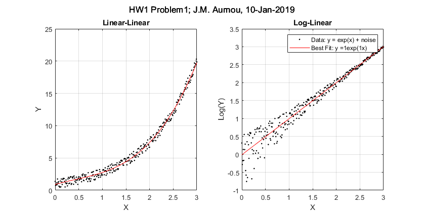

% Homework 1 % % Author: David James % Date: 20180116 figure(1); % plotting x-y plot subplot(1,2,1); p1 = polyfit(x,y,3); y1 = polyval(p1,x); plot(x,y,'.k',x,y1,'r') title('Linear-Linear'); grid on; xlabel('X'); ylabel('Y'); hold on; % plotting x-log(y) plot f = log(y); subplot(1,2,2); p2 = polyfit(x,f,1); y2 = polyval(p2,x); plot(x,f,'.k',x,y2,'r') title('Log-Linear'); xlabel('X'); ylabel('Log(Y)'); grid on; y2Str = strcat('Best Fit: y = ', num2str(p2(1),1), 'exp(1x)'); sgtitle('HW1 Problem1; J.M. Aurnou, 10-Jan-2019'); legend('Data: y = exp(x) + noise', y2Str);